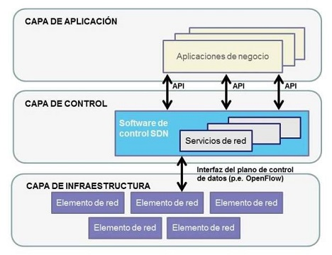
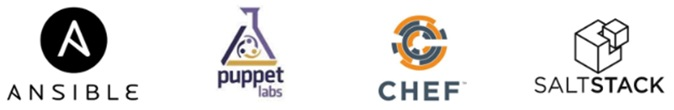

Actualmente muchos dispositivos incorporan tecnologías inteligentes que ayudan a determinar su comportamiento. Esto puede ser tan simple como cuando un dispositivo inteligente reduce su consumo de energía durante períodos de alta demanda o tan complejo como conducir un auto de manera autónoma.
Cada vez que un dispositivo toma una decisión, en función de información externa, dicho dispositivo se conoce como un dispositivo inteligente. (indica que tiene la capacidad para alterar su comportamiento según su entorno).
Para que un dispositivo pueda "pensar" el mismo debe ser programado utilizando herramientas de automatización de red.
SDN: SDN.
https://www.youtube.com/watch?v=yfvduvkKrpMArquitectura SDN
Se considera una arquitectura de red donde el control se desacoplado de la función de reenvio y permitiendo ser programable; facilita la abstracción a las aplicaciones y servicios de la infraestructura base, permitiendo la gestion de la red como una identidad lógica o virtual.
 Arquitectura SDN por ONFLa inteligencia de la red es centralizada en controladores SDN basados en software.
Formato de datos
Dentro de todo proceso de comunicación existen esquemas para interpretar el dato recibido, un formato es un esquema ordenado para entender la información y procesarla; es asi que existen formatos comunes usados en muchas aplicaciones incluidas automatización de la red y programación. Donde destacan YAML (no es un lenguaje de marcado), JSON Notación de objeto de JavaScript y XML (Lenguaje de marcado extensible).
Formatos: Enlace de información.
APIs
Se entiende como un programa que permite a otras aplicaciones accesar a su información o servicios, donde un conjunto de reglas describen como una aplicación interactua con otra para que esa interacción ocurra. Las APIs pueden distinguirse entre abiertas, internas y de partner
Se tienen hasta 4 tipos de API's para el servicio WEB, como son SOAP, REST, XML-RPC y JSON-RPC; Teniendo a REST como la mas empleada y compatible con diversos formatos.
API REST funciona encima del protocolo HTTP, definiendo un conjunto de funciones que los desarrolladores realizan (solicitudes y respuestas) con HTTP como GET y POST.
Una solicitud de API puede realizarse desde sitios web de desarrolladores, Postman, Python o Sistemas operativos de red.
APIs: Enlace de información.
Herramientas de administración de configuración
Las herramientas de administración de configuración utilizan las solicitudes de API RESTful para automatizar tareas y pueden escalar en miles de dispositivos.
Entre los beneficios estan Control de versión de software, Atributos del dispositivo (nombres, direccionamiento y seguridad), Configuración de protocolos o Configuraciones de ACL.
Entre las herramientas mas conocidas estan Ansible, Chef, Puppet y SaltStack; ya que admiten varios formatos de datos. Resumen de la función y protocolos del modelo OSI
Es importante relacionar la función de cada capa para comprender el trabajo de cada dispositivo de red, lo cual facilita un mejor diseño, optimización y la solución de fallos en la red .
Herramientas de administración: Enlace de información.
Ethernet
Es una de las tecnologias LAN que mas evoluciono en las ultimas decadas, principalmente por el uso del switch, los medios de fibra optica y el soporte de ancho de banda. Permitiendose su aplicación en entornos MAN y WAN .
Se estandarizo mediante la IEEE 802.3, presentado beneficios de escalabilidad, bajo costo, simplicidad, bajo retardo, direccionamiento flexible, entre otros. La tecnologia define la funcionalidad a nivel capa fisica y enlace de datos.
Ethernet presenta varias versiones que principalmente varian en el tipo de medio y su alcance (802.3i, 802.3u, 802.3z, 802.3ab, 802.3ae, 802.3ak, 802.3an, 802.3ap & 802.3aq.
Ethernet: Enlace de información.